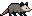
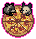
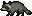
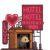

Team Trash
Scavenge. Snack. Survive!
Team Trash is a 2D Unity platformer set in a neon-drenched city and its shadowy sewer system, where players freely switch between a witty raccoon and a semi-aggressive possum on a chaotic trash-scavenging mission.
DOWNLOAD GAMECore Systems
🦝 Character Switching
🍕 Resource System: Trash = Ammo = Score
This creates constant tension between greed and safety.
🌆 Dynamic Threat Zones
🎭 Special Abilities
Narrative Outcome System
The ending screen dynamically changes based on total trash collected, survival of characters, whether possum abandoned its babies, and the player’s greed-vs-survival balance.



Project Details
Art & Design
